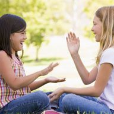

El escondite
Es un juego en grupo en el que un niño tiene que contar con los ojos cerrados hasta el número que se acuerde entre todos y, al terminar la cuenta, debe avisar en voz alta a los demás. Entonces, debe salir a buscar a los demás niños, que se habrán escondido mientras el pequeño contaba con los ojos cerrados. Cuando el niño encuentra a alguien, debe tocarlo para eliminarlo y seguir buscando. Para salvarse, los niños que están escondidos tienen que correr al lugar donde estaba contando y tocarlo antes de que les atrape.
La rayuela

Con una tiza se dibuja un diagrama compuesto por 10 cuadros y se escribe en cada cuadro un número del 1 al 10. El niño debe situarse de pie detrás del primer cuadrado y lanzar una piedra encima del diagrama. La casilla en la que cae la piedra no se puede pisar. El pequeño comenzará el circuito con un salto a la pata coja (si hay un cuadro) o a dos pies (si el cuadrado es doble). El objetivo consiste en ir pasando la piedra de cuadro en cuadro hasta el número 10 y volver. Si el niño se cae o la piedra sale de cuadro, deberá rendirse.
Saltar a la comba
Se trata de un juego muy beneficioso para los niños, ya que les permite realizar un ejercicio físico muy completo mientras se divierten. Se trata de que el niño salte a cuerda acompañado de una canción. Sin darse cuenta, el niño salta y salta sin parar, realizando un excelente ejercicio físico para su organismo. Es una actividad perfecta para compartir con los amigos al aire libre.
La carrera de sacos
Este juego en grupo debe realizarse en una superficie sin obstáculos, ya que las caídas son inevitables. Los niños deben colocarse en línea recta y meter los pies dentro de un saco y cuando alguien da la orden de salida, salen todos haciendo una carrera, manteniéndose agarrados al saco. Durante toda la carrera, los pies deben estar dentro del saco. Gana quien llega primero a la línea de meta.
La gallinita ciega
El mínimo de jugadores es de cuatro personas y se necesita un pañuelo para cubrir los ojos a la persona que hace de gallinita. Para decidir quién empieza a ser la gallinita, se puede hacer un sorteo. Una vez se le han vendado los ojos, el niño deberá dar vueltas sobre sí mismo cantando la siguiente canción: "Gallinita ciega, que se te ha perdido una aguja y un dedal, date la vuelta y lo encontrarás". Una vez terminada la canción, la "gallinita" deberá encontrar a los demás niños.
El pañuelo
Este juego enfrenta a dos equipos compuestos por el mismo número de personas. A cada miembro del equipo se le asigna un número que estará emparejado con el rival que tenga el mismo número. Una persona hace de juez y debe decir en voz alta el número. Los dos participantes, cada uno de un equipo, que tengan este número deberán correr para coger el pañuelo y llevarlo a su base. Si el que coge el pañuelo es pillado antes de llegar a su base, perderá el punto.
El juego de las sillas
Para jugar, deben haber tantas sillas como participantes haya en el juego, y se quitará una silla antes de empezar. También se necesitará un reproductor de música. Se colocan las sillas formando un círculo con los respaldos hacia dentro. Los niños se sitúan de pie alrededor de las sillas, uno detrás de otro. La persona que controla la música la hace sonar. Mientras suena, los niños deben girar alrededor de las sillas. En el momento en que la música para, cada jugador deberá sentarse en una silla. El que se quede sin silla quedará eliminado.
El ratón y el gato
Este juego consiste en hacer un círculo entre los niños agarrados de la mano. Dos de ellos se escogen al azar: uno hará de gato y el otro de ratón. El resto de niños cantará la canción: "Ratón que te pilla el gato, ratón que te va a pillar, si no te pilla esta noche, mañana te pillará". Mientras suena la canción, el ratón correrá por los huecos formados entre los brazos de los niños. El gato le perseguirá, pero los niños bajarán los brazos para no dejarle pasar. Cuando el gato toca al ratón, el ratón pasa a ser el gato.
Juegos con las palmas de las manos
Los juegos con las palmas de las manos son muy populares y se pueden realizar en cualquier lugar. Se trata de juntar las palmas de las manos mientras se canta una canción. Pueden jugar dos o más niños y han de chocar las palmas de diferentes formas: una hacia arriba y otra hacia abajo, en el medio, de lado, etc. El juego de las palmas ayuda a potenciar la memoria y la coordinación de los pequeños.
Juegos de balón
Todo un clásico en los juegos infantiles. El balón se utiliza para jugar a una gran cantidad de juegos, desde que el bebé gatea hasta que es más mayorcito y puede empezar a desarrollar el equilibrio, la coordinación motora y la fuerza a través de este tipo de juegos. Existen muchos juegos, la mayoría de ellos en equipo: fútbol, baloncesto, pasar la pelota, etc.